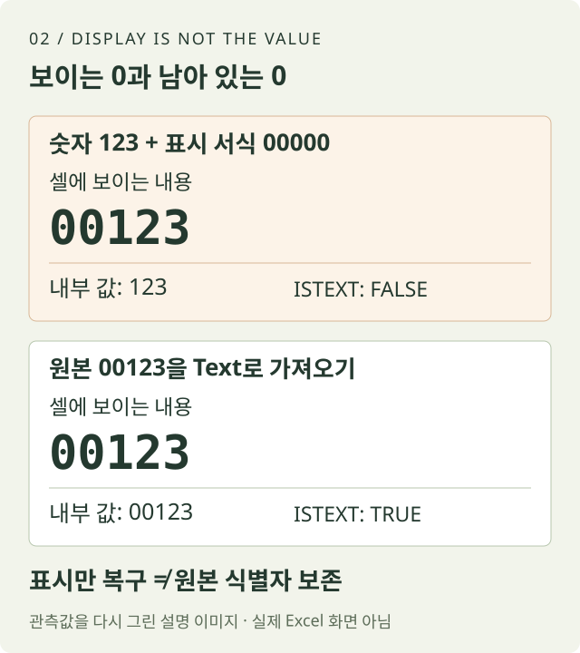

EXCEL IMPORT · IDENTIFIERS
CSV의 앞자리 0을
Excel에서 지키기
상품 코드, 사번, 우편번호와 계정 번호는 계산할 숫자가 아니라 식별자입니다. Excel이 00123을 123으로 변환한 뒤 셀 서식을 바꾸는 방법에는 원래 자릿수를 알 수 없다는 한계가 있습니다.
수정: · 실제 Excel에서 표시 형식과 내부 값을 비교한 결과를 추가했습니다.
01 / MEANING
모양이 숫자여도
의미는 숫자가 아닐 수 있습니다
00123과 123은 계산에서는 같은 수지만
상품 코드 체계에서는 다른 문자열일 수 있습니다. 앞자리 0은 길이
규칙이나 지역·분류를 나타낼 수도 있습니다. 이 열을 합산할 필요가
없다면 숫자로 자동 변환하는 이점보다 식별 정보 손실 위험이
큽니다.
먼저 데이터 사전을 확인합니다. 코드의 길이가 고정인지, 빈 값이 가능한지, 문자와 하이픈이 섞일 수 있는지 기록합니다. 이 기준이 있어야 123을 00123으로 만들 때 0을 두 개 붙이는 것이 맞는지 판단할 수 있습니다.
02 / DAMAGE
이미 123이 됐다면
서식은 원본을 기억하지 못합니다

Excel에서 사용자 지정 형식 00000을 적용하면
화면에는 00123처럼 보일 수 있습니다. 하지만 셀의 실제 값은
여전히 숫자 123입니다. 길이가 모두 5자리라는 명확한 계약이 있을
때 표시용으로는 쓸 수 있지만, 원본이 0123인지 00123인지 알 수
없는 상황을 복구하지는 못합니다.
일반 더블클릭으로 CSV를 연 뒤 값이 변한 경우에는 파일을 저장하지 말고 닫은 다음 untouched 원본으로 돌아가는 것이 안전합니다. 저장해 버렸다면 버전 기록이나 원본 내보내기를 다시 확보합니다.
03 / IMPORT
From Text/CSV에서
변환 전에 Text로 지정합니다
- 새 통합문서에서 Data → From Text/CSV를 선택합니다.원본 CSV를 직접 더블클릭하지 않습니다.
- 구분자와 인코딩을 미리보기에서 확인합니다.열이 어긋난 상태에서 자료형만 바꾸면 잘못된 필드를 보존하게 됩니다.
- Transform Data를 열고 식별자 열을 Text로 지정합니다.자동 Changed Type 단계가 00123을 123으로 만든 뒤라면 그 단계를 제거하고 처음부터 다시 지정합니다.
- Close & Load 후 수식 입력줄에서 실제 값을 확인합니다.셀 폭이나 표시 형식에 의존하지 않고 00123 자체가 남았는지 봅니다.
00123, 00007, A-004를 가져왔을 때 세 값이 정확히 유지되어야 합니다. 숫자 합계를 내는 quantity 같은 열은 별도로 숫자 자료형을 적용합니다.
item_id,quantity 00123,2 00007,1 A-004,3
04 / EXPORT
XLSX와 CSV의
보존 범위가 다릅니다
XLSX는 셀의 자료형과 표시 서식을 함께 저장하지만 CSV는 텍스트 값만 저장합니다. Excel 안에서 Text였던 00123을 올바르게 CSV로 내보내면 문자 0이 파일에 남습니다. 그러나 그 CSV를 다시 더블클릭하면 Excel이 또 숫자로 추론할 수 있습니다.
따라서 저장 성공 여부는 Excel 화면만으로 확인하지 않습니다. 내보낸 CSV 복사본을 텍스트 편집기로 열어 00123이 실제로 쓰였는지 확인하고, 다시 가져올 때도 Text 규칙을 적용합니다. CSV를 전달할 때는 식별자 열이라는 설명이나 가져오기 규칙을 함께 전달하는 편이 안전합니다.
05 / VERIFY
길이와 정확한 값,
왕복 저장을 확인합니다
표본 ID의 문자 길이, 원본과의 정확 일치, 빈 값 개수, 중복 개수를 확인합니다. 아주 긴 숫자형 ID라면 Excel의 15자리 정밀도 한계도 별도 문제이므로 반드시 Text로 다룹니다. 이미 16자리 뒤가 0으로 바뀐 값은 표시 형식으로 복구할 수 없습니다.
가장 중요한 질문은 “화면에 0이 보이는가”가 아니라 “파일과 셀의 실제 값에 0이 남아 있는가”입니다. 그 질문으로 검증하면 가져오기와 내보내기 양쪽의 손상을 구분할 수 있습니다.
| item_id | quantity | 검증 |
|---|---|---|
| 00123 | 2 | 5글자 보존 |
| 00007 | 1 | 5글자 보존 |
| A-004 | 3 | 문자와 하이픈 보존 |
06 / OBSERVED RESULT
같은 00123으로 보여도
셀 안의 값은 달랐습니다
2026년 10월 5일, Excel 16.0 build 5569.0에서 상품 코드가 들어 있는 합성 CSV를 QueryTables 텍스트 가져오기로 읽었습니다. General로 변환한 셀과 Text로 보존한 셀을 비교한 뒤, 숫자 셀에만 사용자 지정 표시 형식 00000을 적용했습니다.
| 설정 | 표시 또는 문자열 | 내부 값 | 자료형 |
|---|---|---|---|
| General 가져오기 | 123 | 123 | 숫자 |
| 숫자에 00000 서식 | 00123 | 123 | 숫자 |
| Text 가져오기 | 00123 | 00123 | 문자열 |
두 번째 셀의 표시 문자열은 00123이었지만, 실제 값은 여전히 숫자 123이었습니다. 다섯 자리가 업무 규칙으로 확정된 표시용 코드라면 이 서식이 유용할 수 있습니다. 다만 원래 값이 123, 0123, 00123 중 무엇이었는지를 복구했다는 증거는 아닙니다.
따라 해 볼 때의 완료 기준
- 새 파일 두 개에 동일한 원본을 가져옵니다.한쪽은 식별자 열을 General, 다른 쪽은 Text로 지정합니다. 원본은 덮어쓰지 않습니다.
- General 쪽에만 00000 표시 서식을 줍니다.화면이 비슷해져도 수식 입력줄과
=ISTEXT(A2)결과를 비교합니다. Text 쪽은 TRUE, 숫자 쪽은 FALSE여야 합니다. - 정확한 문자열과 길이를 대조합니다.
=LEN(A2)와=EXACT(A2,"00123")를 함께 봅니다. 표시 형식이 아니라 원본 식별자 보존이 목표입니다.
별도의 빈 통합문서에서 COM으로 가져오기와 표시 형식을 실행하고 값을 읽었습니다. 리본 메뉴 클릭, Power Query, 저장 후 재가져오기까지 검증한 결과는 아닙니다. CSV 왕복 저장은 앞 절의 절차대로 자신의 환경에서 별도로 확인하세요.